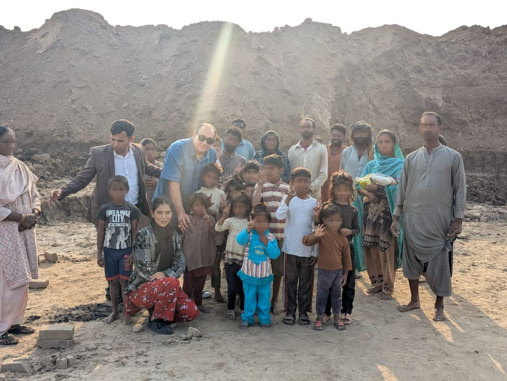
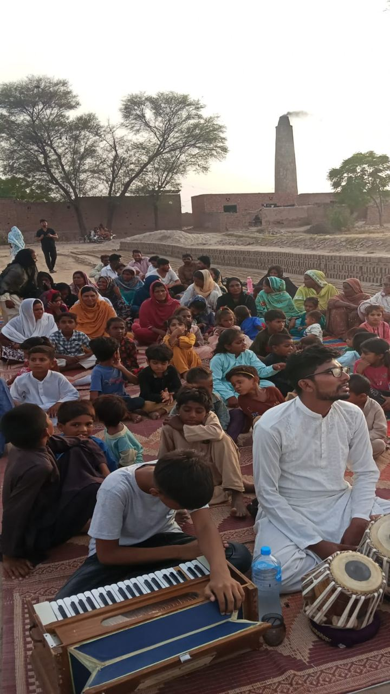

Freedom International helps vulnerable brick kiln families escape the cycle of debt and bonded labor through sustainable, dignified livelihood opportunities — built on biblical compassion, responsible stewardship, transparency, and accountability.


At the beginning of 2026, God placed a burden on our hearts to begin a mission called Lifting Up Children — not only to free families trapped in bonded labor at brick kilns, but to give them hope, dignity, and the opportunity to build a better future.
Six brick kiln communities are still waiting for help. Hundreds of families remain trapped in bonded labor, hoping someone will hear their cries and give them the opportunity to live in freedom.
To restore hope, dignity, and financial independence to brick kiln families by providing practical opportunities that enable them to support themselves with confidence and purpose.
"Every family set free is another testimony of God's love. Every child given an education is another life transformed. And every debt that is paid is another chain of slavery broken for generations to come."